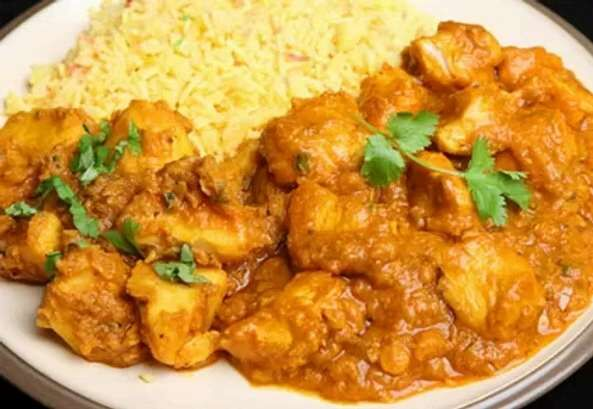

Bombay Curry Chicken

Ingredients
- 2 kg pieces of chicken
- 2 teaspoons olive oil
- 2 tablespoons white Vinegar
- 4 garlic cloves, crushed
- 1/2 teaspoon powdered Eastern Turmeric
- 1 tablespoon powdered Eastern Chili
- 1/2 teaspoon powdered Eastern black pepper
- 1 tablespoon ginger, finely grated
- 10 leaves of curry
- season with salt to taste
Instructions
- In a saucepan, coat the chicken pieces with water and bring them to a boil. Reduce heat to a minimum, cover, and cook for 30 minutes, or until chicken is cooked through.
- 1 cup (250ml) liquid should be set aside after draining.
- In a saucepan, heat the oil and add the garlic, cumin, turmeric, chili, pepper, ginger, and curry leaves. Cook for 2 minutes on medium-high heat.
- Combine the chicken bits, and reserved stock, in a mixing dish.
- Bring to a boil, then reduce to low heat, cover, and cook for 15 minutes.
- Serve with new coriander leaves as a garnis
Notes
- The directions mention cumin and coriander leaves, and list white vinegar in the ingredients without using it — this is as written in the original.